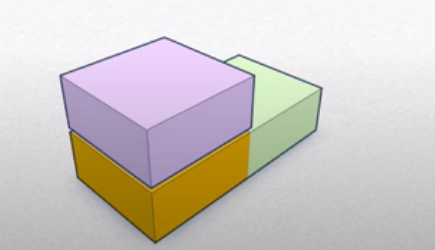
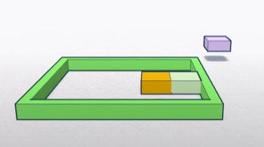
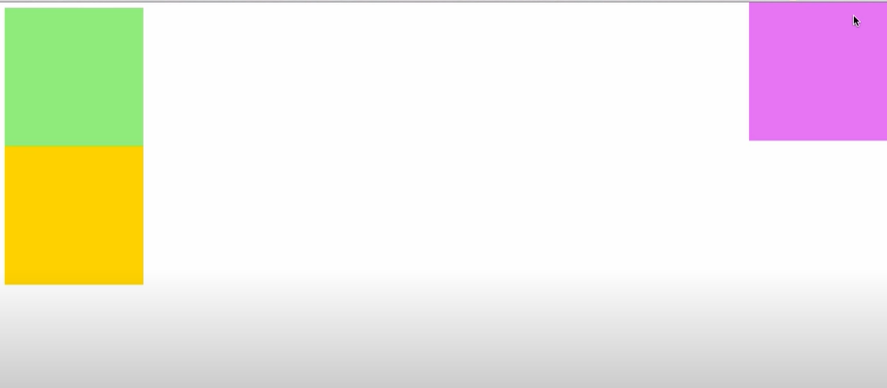

Sebuah properti CSS yg memungkinkan kita untuk menggeserkan sebuah elemen tanpa harus mempengaruhi elemen HTML sekitarnya
Ketika kita menggerakkan elemen dgn posisi absolute (menggunakan properti top, left, bottom dan right), ruang yg ditempati tsb dianggap tidak ada
Ketika kita menggerakkan elemen dgn posisi absolute, elemen bergerak relatif thdp posisi dari elemen parent-nya, selama element parent-nya memiliki posisi yg juga non-static. *note: parent-nya disini adlh parent terdekatnya
Jika kita memberi properti top: 0; dan left: 0; maka elemen akan berada di ujung kiri atas dari elemen parent-nya.
Masalah thdp elemen dibawah ini adalah saat ingin memindahkan salah satu elemen namun elemen disekitarnya juga ikut berpindah dan hal itu harus dihindari karena tujuannya bukan begitu.
*note : masalah ini menggunakan property position: static;
Pada kondisi ini salah satu elemen yang memiliki value relative diangkat satu dimensi dari kedua elemen yang lain dan dapat menggunakan properti top, left, right, dan bottom tdk seperti masalah diatas.
Masalah thdp elemen dibawah ini adalah saat ingin memindahkan elemen yg bernilai absolute tidak sesuai dengan ukurannya, dikarenakan value absolute ini berdasarkan element parent terdekatnya dan pada kondisi ini adalah body.
Pada kondisi ini elemen violet memiliki dimensi yg berbeda dari dimensi 2 kotak elemen lainnya. Nah, untuk membuat kotak violet berada didalam border kita perlu membuat elemen border/ pembungkus itu berada di dimensi violet dgn cara membuat posisinya bernilai relative
Klik disini untuk melihat.